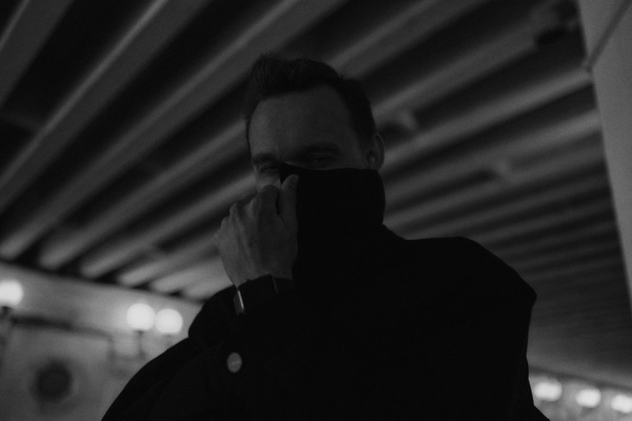

Сцена
Я видел звёзд, у которых за минуту до выхода дрожат руки. Женихов, забывших клятву на середине фразы. Артистов, у которых посреди песни умер микрофон, а зал этого даже не заметил.
Я видел, как ломается спокойствие. И видел, как его держат.
Психолог · Спикер · Бизнес-тренер
Психолог, который называет вещи своими именами
Лекции без воды, эзотерики и «просто полюби себя». Только то, что можно применить завтра утром.
Я Алексей Барковский. Семь лет я работаю там, где у людей самые нервные дни в жизни: свадьбы, концерты, форумы, показы. Сначала держал зал с микрофоном, потом держал мероприятия за кулисами. Теперь помогаю людям держать собственную жизнь.
Я видел звёзд, у которых за минуту до выхода дрожат руки. Женихов, забывших клятву на середине фразы. Артистов, у которых посреди песни умер микрофон, а зал этого даже не заметил.
Я видел, как ломается спокойствие. И видел, как его держат.
12 лет армейского рукопашного боя научили меня, что паника — не приговор, а то, чем можно управлять. Парашютный спорт — что страх можно взять с собой и всё равно шагнуть. Сцена — что людям не нужны умные слова. Им нужны слова, которые работают.
В 2023 году я получил диплом психолога. Не только чтобы консультировать, но и чтобы объяснять: что на самом деле происходит у нас в голове, когда мир несётся быстрее, чем мы успеваем его переварить.
Мои лекции — без воды, без эзотерики и без «просто полюби себя». Только то, что можно унести домой и применить завтра утром.
Каждый инструмент, о котором я говорю, я сначала проверил на себе. Включая год, когда я отказался от всего, что мешало, и пересобрал себя с нуля.
Да, я пишу книгу. Нет, она не про позитивное мышление.
Если вам нужен спикер, после которого люди думают, спорят и меняют что-то в своей жизни, — пишите.
Длительность и формат подстраиваю под ваше мероприятие.
Для кого
Для тех, кто «и то, и это, и вот это», а выбрать что-то одно не получается. И для тех, кто живёт правильно, но почему-то не своей жизнью.
Что получит слушатель
Для кого
Для тех, у кого сейчас сложный период — в деньгах, работе или отношениях — и кто устал от советов «просто подумай о хорошем».
Что получит слушатель
Для кого
Для тех, кто молчит на совещаниях, боится, что его не поймут, или устал объяснять свою позицию по десятому кругу.
Что получит слушатель
Классическое выступление: живые истории, понятные объяснения и инструменты, которые можно применить сразу. Для конференций, форумов и городских площадок.
Лекция плюс практика: упражнения, работа в парах, разбор вопросов из зала. Для команд и камерных групп до 50 человек.
Вебинар или прямой эфир с вопросами в чате. Для онлайн-школ, сообществ и распределённых команд.
Стресс, выгорание, коммуникация в команде. Адаптирую тему под задачи бизнеса и сотрудников.
Интервью, панельная дискуссия или подкаст. Отвечаю на острые вопросы — честно и без заготовок.
Семь лет я технический директор мероприятий и концертный звукорежиссёр. Знаю, как всё устроено за кулисами: со мной не будет сюрпризов со звуком, таймингом и техникой.
Работаю офлайн и онлайн. Город, дату и формат обсудим в Telegram.
Обсудить выступление
Людям не нужны умные слова. Им нужны слова, которые работают.
Настоящие сообщения от клиентов, без имён. Нажмите на отзыв, чтобы прочитать его крупно.
Нет, она не про позитивное мышление.
Руководство пользователя, а не научное исследование. Простым языком — о том, что, на мой взгляд, должен знать и понимать каждый человек. Конкретные ответы на два вопроса:
почему?
как?
И главное — как понять, что ваша жизнь только в ваших руках, и решиться на тот самый страшный выбор: в пользу того, чего по-настоящему хочется, а не очередного дня сурка.
Короткие практичные инструкции: что делать, когда накрыло.
Смотреть в своём темпе — и возвращаться, когда снова понадобится.
Рабочие тетради с упражнениями к лекциям.
Алексей Барковский
Психолог · Спикер · Бизнес-тренер
* Instagram принадлежит компании Meta, признанной экстремистской и запрещённой в РФ.